전기기능장 (2010-07-11 기출문제)
1과목: 임의구분
1. 분상 기동형 단상 유도 전동기의 회전 방향을 바꾸려면?
- 주권선 및 기동권선 단자의 접속을 모두 바꾼다.
- 기동권선이나 주권선 중 어느 한 권선의 접속을 바꾼다.
- 전원의 두선을 바꾸어 접속한다.
- 정지 후 손으로 회전방향을 바꾼 다음에 기동시킨다.
(정답률: 88%)

2. 역률 개선용 콘덴서에서 고조파 영향을 억제하기 위하여 사용하는 것은?
- 직렬저항
- 병렬저항
- 직렬리액터
- 병렬리액터
(정답률: 84%)
3. 전류계 및 전압계를 확도에 따라 분류할 때 일반 배전반용으로 사용되는 지시계기의 계급은?
- 0.5급
- 1.0급
- 1.5급
- 2.5급
(정답률: 82%)
4. 그림과 같은 회로에서 10[Ω]에 흐르는 전류는?
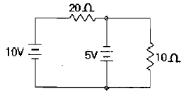
- 0.2[A]
- 0.5[A]
- 1[A]
- 1.5[A]
(정답률: 63%)
5. 과전류차단기로 저압전로에 사용하는 100[A] 초과 200[A] 이하의 퓨즈는 수평으로 붙여서 2배의 전류를 통하는 경우에 몇 분 안에 용단되어야 하는가?
- 2분
- 8분
- 60분
- 120분
(정답률: 66%)
6. 비수치적 연산 중에서 필요 없는 일부의 bit혹은 문자를 지워버리고 나머지 bit나 문자들만을 가지고 처리하기 위하여 사용되는 연산자는?
- NOT
- AND
- XOR
- OR
(정답률: 40%)
7. 금속관 배선에서 금속관의 굵기를 선정하는 경우 굵기가 다른 절연전선을 동일 관내에 넣는 경우 피복 절연물을 포함한 단면적의 총합계가 관내 단면적의 얼마 이하가 되도록 하여야 하는가?
- 20[%]
- 32[%]
- 48[%]
- 50[%]
(정답률: 70%)
8. 특고압 가공전선로의 지지물로 사용하는 철탑의 종류에 대한 설명으로 잘못된 것은?
- 직선형 전선로의 직선부분에 그 보강을 위하여 사용하는 것
- 각도형은 전선로 중 3도를 초과하는 수평각도를 이루는 곳에 사용하는 것
- 인류형은 전가섭선을 인류하는 곳에 사용하는 것
- 내장형은 전선로의 지지물 양쪽의 경간에 차가 큰 곳에 사용하는 것
(정답률: 69%)
9. 인버터(inverter)의 전력변환 관계에 대한 설명으로 옳은 것은?
- 직류를 교류로 변환시키기 위한 전력변환기이다.
- 교류를 직류로 변환시키기 위한 전력변환기이다.
- 하나의 다른 크기를 갖는 직류를 또 다른 크기의 직류 값으로 변환하기 위한 전력변환기이다.
- 다른 크기(amplitude)나 주파수(frequency)를 갖는 교류를 또 하나의 다른 크기나 주파수를 갖는 교류값으로 변환하기 위한 전력변환기이다.
(정답률: 91%)
10. 그림 기호와 같은 반도체 소자의 명칭은?
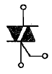
- SCR
- UJT
- TRIAC
- FET
(정답률: 90%)
11. 피뢰기를 시설하지 않아도 되는 것은?
- 발전소·변전소의 가공전선 인입구 및 인출구
- 지중 전선로의 말단 부분
- 가공 전선로에 접속한 1차측 전압이 35[kV] 이하, 2차 전압이 저압 또는 고압인 배전용 변압기의 고압측 및특고압 측
- 가공전선로와 지중전선로가 접속되는 곳
(정답률: 79%)
12. 건축물의 종류가 주택, 기숙사, 여관, 호텔, 병원, 창고인 경우의 옥내배선 설계에 있어서 간선의 굵기를 선정할 때 전등 및 소형전기기계기구이 용량합계가 10KVA를 초과하는 것은 그 초과량에 대하여 수용률을 몇[%]로 적용할 수 있는가?
- 30[%]
- 50[%]
- 70[%]
- 80[%]
(정답률: 73%)
13. 22900/220[V]의 15[kVA] 변압기로 공급되는 저압 가공 전선로의 절연부분의 전선에서 대지로 누설하는 전류의 최고 한도는?
- 약 34[mA]
- 약 45[mA]
- 약 68[mA]
- 약 75[mA]
(정답률: 57%)
14. 3상 동기발전기의 단락비를 산출하는데 필요한 시험은?
- 외부특성시험과 3상 단락시험
- 돌발 단락시험과 3상 단락시험
- 무부하 포화시험과 3상 단락시험
- 대칭분의 리액턴스 측정시험
(정답률: 91%)
15. 소맥분·전분·유황 등 가연성 분진에 전기설비가 발화원이 되어 폭발할 우려가 있는 곳에 시설하는 저압 옥내배선의 공사방법으로 옳지 않은 것은?
- 가요전선관 공사
- 금속관 공사
- 합성수지관 공사
- 케이블 공사
(정답률: 87%)
16. 정격전압에서 소비전력이 600[W]인 저항에 정격전압의 90[%]의 전압을 가할 때 소비되는 전력은?
- 480[W]
- 486[W]
- 540[W]
- 545[W]
(정답률: 56%)
17. 60[㎐]의 전원에 접속된 4극, 3상 유도전동기의 슬립이 0.⑤일 때의 회전속도는?
- 90[rpm]
- 1710[rpm]
- 1890[rpm]
- 36000[rpm]
(정답률: 84%)
18. 송전단 전압 66[kV], 수전단 전압 61[kV]인 송전 선로에서 수전단의 부하를 끊은 경우의 수전단 전압이 63[kV]이면 전압변동률은?
- 약 2.8[%]
- 약 3.3[%]
- 약 4.8[%]
- 약 8.2[%]
(정답률: 77%)
19. 그림과 같은 회로에서 소비되는 전력은?
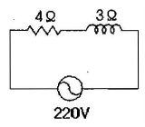
- 5808[W]
- 7744[W]
- 9680[W]
- 12100[W]
(정답률: 79%)
20. 권상 하중 25[t]인 기중기의 권상용 전동기의 출력이 25[kW]인 경우 권상 속도는? (단, 권상 장치의 효율은 0.7이다.)
- 약 0.7[m/min]
- 약 1[m/min]
- 약 4.28[m/min]
- 약 6.12[m/min]
(정답률: 50%)
2과목: 임의구분
21. 저압 인입선의 시설에서 인입용 비닐절연전선을 사용하는 경우 지름은 몇[mm]이상 이어야 하는가? (단, 경간은 15[m]를 넘는 경우임)
- 1.6[㎜]
- 2.6[㎜]
- 3.2[㎜]
- 3.6[㎜]
(정답률: 75%)
22. 직류전동기의 제동법이 아닌 것은?
- 발전제동
- 저항제동
- 회생제동
- 역전제동
(정답률: 70%)
23. 지중에 매설되어 있고 대지와의 전기저항 값이 최대 몇[Ω]이하의 값을 유지하고 있는 금속제 수도관로는 이를 각종 접지공사의 접지극으로 사용할 수 있는가?
- 0.3[Ω]
- 3[Ω]
- 30[Ω]
- 300[Ω]
(정답률: 71%)
24. 후강 전선관이란 관의 두께가 두꺼운 전선관을 말한다. 후강 전선관의 규격 중 관의 호칭으로 잘못된 것은?
- 28
- 34
- 42
- 54
(정답률: 74%)
25. 진상용 고압 콘덴서에 방전 코일이 필요한 이유는?
- 전압 강하의 감소
- 낙뢰로부터 기기 보호
- 역률 개선
- 잔류 전하의 방전
(정답률: 89%)
26. 전로의 절연저항 및 절연내력 측정에 있어 사용전압이 저압인 전로에서 정전이 어려운 경우 등 절연저항 측정이 곤란한 경우에는 누설전류를 몇[mA]이하로 유지하여야 하는가?
- 1[mA]
- 2[mA]
- 3[mA]
- 4[mA]
(정답률: 63%)
27. 피뢰기의 제한전압이 750[kV]이고, 변압기의 절연강도가 1⑤0[kV]라고 하면 보호 여유도는?
- 20[%]
- 30[%]
- 40[%]
- 60[%]
(정답률: 55%)
28. 60[㎐]로 설계된 유도기를 동일전압에서 50[㎐]로 사용할 때 낮아지거나 감소되는 것을 나열한 것으로 옳은 것은?
- 역률, 냉각속도, 누설리액턴스
- 온도, 최대토크, 자속
- 역률, 철손, 기동전류
- 자속, 냉각속도, 기동전류
(정답률: 61%)
29. 다음은 7세그먼트에 의한 표시 회로를 나타내고 있다. (A), (B)의 표시는?
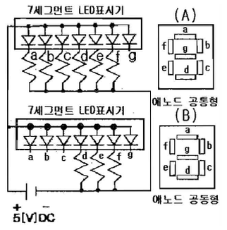
- (A) 6, (B) 3
- (A) L, (B) 0
- (A) 0, (B) 7
- (A) 0, (B) L
(정답률: 60%)
30. 조명방식 중 원하는 곳에서 원하는 방향으로 조도를 줄 수 있으며, 불필요한 장소는 소등할 수 있어 필요한 만큼의 조도를 가장 경제적으로 얻을 수 있는 특징을 갖는 조명 방식은?
- 국부조명방식
- 전반조명방식
- 간접조명방식
- 직접전반조명방식
(정답률: 76%)
31. 전기설비가 고장이 나지 않은 상태에서 대지 또는 회로의 노출 도전성 부분에 흐르는 전류는?
- 접촉전류
- 누설전류
- 스트레스전류
- 계통의 도전성 전류
(정답률: 92%)
32. PC(Program counter)의 기능에 대한 설명으로 올바른 것은?
- PC의 내용은 fetch cycle 동안에 1이 증가된다.
- PC의 내용은 execute cycle 동안에 1이 증가된다.
- PC의 내용은 fetching, executing과 관계없다.
- PC의 내용은 변화하지 않는다.
(정답률: 35%)
33. 전원공급 점에서 각각 30[m]의 지점에 60[A], 40[m]의 지점에 50[A], 50[m]의 지점에 30[A]의 부하가 걸려있는 경우 부하중심까지의 거리는?
- 20.4[m]
- 37.9[m]
- 44.2[m]
- 122.3[m]
(정답률: 61%)
34. 변압기의 철손이 [kW], 전부하 동손이 Pc[kW]일때 정격출력의 1/2인 부하를 걸었다면 전손실은?
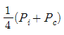
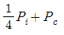
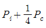
- 4(Pi+Pc)
(정답률: 64%)
35. 그림과 같은 논리회로의 간략화 된 논리함수는?
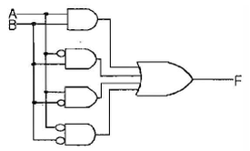
- 0
- 1
- A
- B
(정답률: 71%)
36. 101101에 대한 2의 보수(補數)는?
- 101110
- 010010
- 010001
- 010011
(정답률: 78%)
37. 가로 9[m], 세로 6[m], 방바닥에서 천장까지의 높이가 3.85[m]인 방에서 조명기구를 천장에 직접 부착하고자 한다. 이방의 실지수는? (단, 작업면은 방바닥에서 0.85[m]이다.)
- 1.2
- 2.49
- 9.8
- 16.5
(정답률: 59%)
38. 직류기에서 보극을 설치하는 목적이 아닌 것은?
- 정류자의 불꽃방지
- 브러시의 이동방지
- 정류 기전력의 발생
- 난조의 방지
(정답률: 67%)
39. %오차가 2[%]인 전압계로 측정한 전압이 153[V]라면 그 참값은?
- 122.4[V]
- 133.7[V]
- 150[V]
- 156[V]
(정답률: 65%)
40. 특별 제3종 접지공사의 접지선으로 연동선을 사용할때 접지선의 굵기(공칭단면적)는 몇 [mm2]이상 이어야 하는가?
- 0.75[mm2]
- 2.5[mm2]
- 6[mm2]
- 16[mm2]
(정답률: 62%)
3과목: 임의구분
41. 전선 약호 중NRI(70)의 품명은?
- 450/750 V 일반용 단심 비닐절연전선(70°C)
- 450/750 V 일반용 유연성 단심 비닐절연전선(70°C)
- 300/750 V 기기 배선용 단심 비닐절연전선(70°C)
- 300/750 V 기기 배선용 유연성 단심 비닐절연전선(70°C)
(정답률: 68%)
42. 변류기 개방시 2차측을 단락하는 이유로 가장 옳은 것은?
- 2차측 절연보호
- 2차측 과전류보호
- 측정오차 방지
- 1차측 과전류 방지
(정답률: 80%)
43. 인터럽트에 관한 설명으로 틀린 것은?
- 하드웨어와 소프트웨어 제어 기능이다.
- 인터럽트 기능을 이용하면 프로그램 오류를 자동으로 정정할 수 있다.
- 컴퓨터 시스템에서 비정상적인 상태가 발생했을 때 일어날 수 있다.
- CPU만의 PSW가 교체됨으로써 프로그램의 진행 순서가 바뀐다.
(정답률: 35%)
44. 컴퓨터 제어 장치의 기본 사이클에 속하지 않는 것은?
- 인출 사이클(fetch cycle)
- 다이렉트 사이클(direct cycle)
- 실행 사이클(execute cycle)
- 인터럽트 사이클(interrupt cycle)
(정답률: 37%)
45. 입력 전원 전압이 vs=Vmsinθ인 경우, 아래 그림의 전파 다이오드 정류기의 출력전압(v0(t))에 대한 평균치와 실효치를 각각 옳게 나타낸 것은?
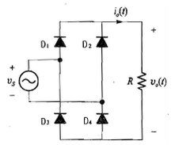
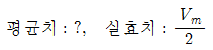
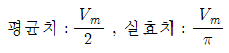
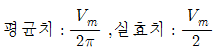
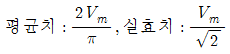
(정답률: 67%)
46. 반가산기의 동작을 옳게 나타낸 것은?
- 2의 자리의 2진수 가산을 하는 동작을 한다.
- 1의 자리의 2진수 가산을 하는 동작을 한다.
- 3의 자리의 2진수 가산을 하는 동작을 한다.
- 1의 자리 carry를 덧셈과 같이 가산하는 동작을 한다.
(정답률: 54%)
47. 2종 가요전선관을 구부리는 경우 노출장소 또는 점검 가능한 은폐장소에서 관을 시설하고 제거하는 것이 부자유하거나 또는 점검이 불가능할 경우는 곡률 반지름을 2종 가요전선관 안지름의 몇 배 이상으로 하여야 하는가?
- 3배
- 6배
- 8배
- 12배
(정답률: 86%)
48. 서지보호장치(SPD) 중 서지가 인가되지 않은 경우는 높은 임피던스 상태에 있으며, 전압서지에 응답한 경우는 임피던스가 연속적으로 낮아지는 기능을 갖는 것은?
- 전압 스위칭형 SPD
- 전압 제한형 SPD
- 임피던스 스위칭형 SPD
- 임피던스 제한형 SPD
(정답률: 53%)
49. 20[KVA], 3300/210[V] 변압기의 1차 환산 등가 임피던스가 6.2+j7[Ω]일 때 백분율 리액턴스강하는?
- 약 1.29[%]
- 약 1.75[%]
- 약 8.29[%]
- 약 9.35[%]
(정답률: 42%)
50. 지중전선로 및 지중함의 시설 방식으로 잘못된 것은?
- 지중전선로는 전선에 케이블을 사용할 것
- 지중전선로는 관로식, 암거식 또는 직접 매설식에 의하여 시설할 것
- 지중함 뚜껑은 시설자이외의 자가 쉽게 열 수 없도록 시설할 것
- 연소성가스가 침입할 우려가 있는 곳에 시설하는 최소 0.5m3 이상의 지중함에는 통풍장치를 할 것
(정답률: 83%)
51. 동기전동기를 무부하로 하였을 때, 계자전류를 조정하면 동기기는 마치 L, C 소자로 작동하고, 계자전류를 어떤일정 값 이하의 범위에서 가감하면 가변 리액턴스가 되고 어떤 일정값 이상에서 가감하면 가변 커패시턴스로 작동한 이와 같은 목적으로 사용되는 것은?
- 변압기
- 동기조상기
- 균압환
- 제동권선
(정답률: 87%)
52. SCR의 전압 공급 방법(Turn-On)으로 가장 옳은 것은?
- 애노드에 (-)전압, 캐소드에 (+)전압, 게이트에(-)전압을 공급한다.
- 애노드에 (-)전압, 캐소드에 (+)전압, 게이트에(+)전압을 공급한다.
- 애노드에 (+)전압, 캐소드에 (-)전압, 게이트에(-)전압을 공급한다.
- 애노드에 (+)전압, 캐소드에 (-)전압, 게이트에(+)전압을 공급한다.
(정답률: 72%)
53. 그림과 같은 접점회로를 논리 게이트로 표현하면?
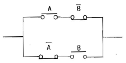
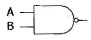
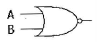
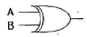
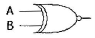
(정답률: 73%)
54. 동기기의 안정도를 증진시키기 위한 방법으로 잘못된 것은?
- 속응 여자방식을 채용한다.
- 단락비를 크게 한다.
- 회전부의 관성을 크게한다.
- 역상 및 영상임피던스를 작게 한다.
(정답률: 53%)
55. 다음 중 브레인스토밍(Brainstorming)과 가장 관계가 깊은 것은?
- 파레토도
- 히스토그램
- 회귀부넉
- 특성요인도
(정답률: 85%)
56. 작업개선을 위한 공정분석에 포함되지 않는 것은?
- 제품공정분석
- 사무공정분석
- 직장공정분석
- 작업자 공정분석
(정답률: 64%)
57. 관리도에서 점이 관리한계 내에 있으나 중심선 한쪽에 연속해서 나타나는 점의 배열현상을 무엇이라 하는가?
- 연
- 경향
- 산포
- 주기
(정답률: 60%)
58. 로트의 크기가 시료의 크기에 비해 10배 이상 클 때, 시료의 크기와 합격판정개수를 일정하게 하고 로트의 크기를 증가시키면 검사특성곡선의 모양 변화에 대한 설명으로 가장 적절한 것은?
- 무한대로 커진다.
- 거의 변화하지 않는다.
- 검사특성곡선의 기울기가 완만해진다.
- 검사특성곡선의 기울기 경사가 급해진다.
(정답률: 74%)
59. 로트의크기 30, 부적합품률이 10[%]인 로트에서 시료의 크기를 5로 하여 랜덤 샘플링할 때, 시료 중 부적합품수가 1개 이상일 확률은 약 얼마인가? (단, 초기하분포를 이용하여 계산한다.)
- 0.3695
- 0.4335
- 0.5665
- 0.63⑤
(정답률: 49%)
60. 과거의 자료를 수리적으로 분석하여 일정한 경향을 도출한 후 가까운 장래의 매출액, 생산량 등을 예측하는 방법을 무엇이라 하는가?
- 델파이법
- 전문가패널법
- 시장조사법
- 시계열분석법
(정답률: 63%)